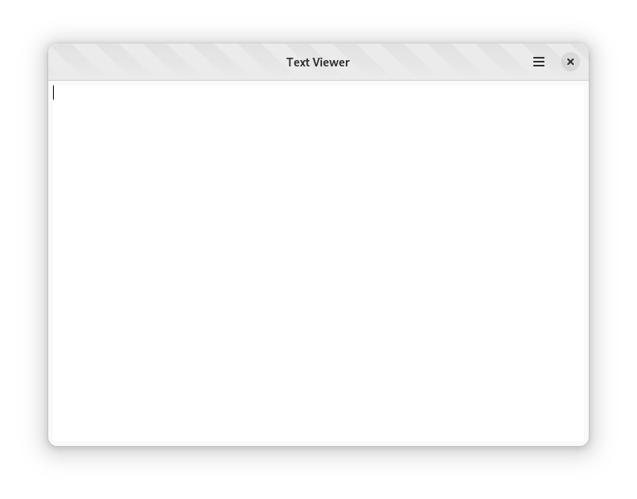

Adding A Content View¶
In this lesson, you will learn how to modify the UI definition file of the application’s window to add a text area UI element. The text area will be used to display the contents of a text file that we are going to load in the next lesson.
Any GNOME application is composed of a hierarchy of UI elements, called widgets; GTK allows defining UI using XML instead of writing them in code. The default template for GNOME applications provided by Builder uses a UI definition file for the main application window, and we are going to edit it like any other file.
Open the
text_viewer-window.uifile under thesrcdirectoryThe window is defined as a template element for the TextViewerWindow class
The window has property elements, which describe the value for the various properties; for instance, setting the default title of the window will be set using the title property
The window also has two child elements
the first child element is a AdwHeaderBar, and it is used to describe the contents of the header bar; in this case, a GtkMenuButton with the primary menu of the application
the second child element is the main content area of the window
Currently, the main content is provided by a GtkLabel widget, with a “Hello, World!” label
Outside the template block, you can find the definition of the menu using the menu element
Set the title of the main window¶
Find the TextViewerWindow definition
Find the property elements that define the default width and height of the window
Add the following property:
<template class="TextViewerWindow" parent="AdwApplicationWindow">
<property name="default-width">600</property>
<property name="default-height">300</property>
<property name="title">Text Viewer</property>
<property name="content">
<object class="AdwToolbarView">
Set the development style for the main window¶
The devel style communicate to the user that the application is a development snapshot.
Find the TextViewerWindow definition
Add the following style:
<template class="TextViewerWindow" parent="AdwApplicationWindow">
<property name="default-width">600</property>
<property name="default-height">300</property>
<property name="title">Text Viewer</property>
<style>
<class name="devel"/>
</style>
<property name="content">
<object class="AdwToolbarView">
Add a scrollable container¶
Follow these steps to add a scrollable container to the window:
First, you need to remove the the UI element that is already in the window. Find the object element that defines the GtkLabel, and remove the whole block
Add the following UI definition for a scrollable container inside the property element for the content property:
<property name="content">
<object class="GtkScrolledWindow">
<property name="hexpand">true</property>
<property name="vexpand">true</property>
<property name="margin-top">6</property>
<property name="margin-bottom">6</property>
<property name="margin-start">6</property>
<property name="margin-end">6</property>
</object>
</property>
The definition of the scrollable container has the following properties:
hexpand and vexpand tell the container to expand to fit the whole area of the parent window
margin-top, margin-bottom tell the container to add a margin of six pixels at the top and bottom edges, respectively
margin-start and margin-end tell the container to add a margin of six pixels at the leading and trailing edges, respectively; the leading and trailing edges are determined by the text direction
Add a text view¶
Follow these steps to add a text view widget to the scrollable container:
Add a new property element for the child property:
<property name="content">
<object class="GtkScrolledWindow">
<property name="hexpand">true</property>
<property name="vexpand">true</property>
<property name="margin-top">6</property>
<property name="margin-bottom">6</property>
<property name="margin-start">6</property>
<property name="margin-end">6</property>
<property name="child">
</property>
</object>
</property>
Add an object definition for the GtkTextView widget, and assign the main_text_view as its identifier
<property name="content">
<object class="GtkScrolledWindow">
<property name="hexpand">true</property>
<property name="vexpand">true</property>
<property name="margin-top">6</property>
<property name="margin-bottom">6</property>
<property name="margin-start">6</property>
<property name="margin-end">6</property>
<property name="child">
<object class="GtkTextView" id="main_text_view">
<property name="monospace">true</property>
</object>
</property>
</object>
</property>
Bind the text view in the source code¶
Templates represent the structure of a UI bound to a specific class; in this case, the UI definition of the TextViewerWindow class. In order to access a UI element from within the class, you must assign an identifier, using the id XML attribute, to the definition in the XML, and tell GTK to bind the object with the same identifier to a member in the instance structure.
Now you can press the Run button and verify that the window contains an empty text area.
In the next lesson, you will learn how to select a file and load its contents into the text area.